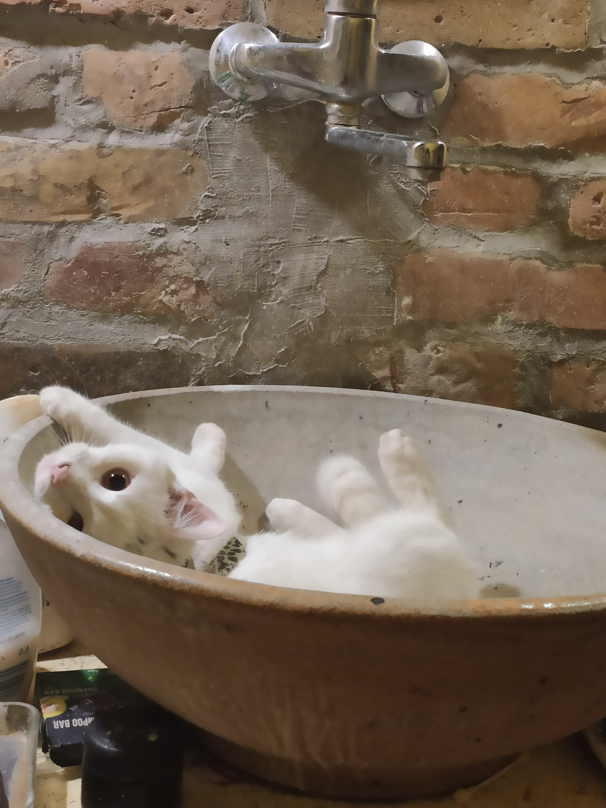
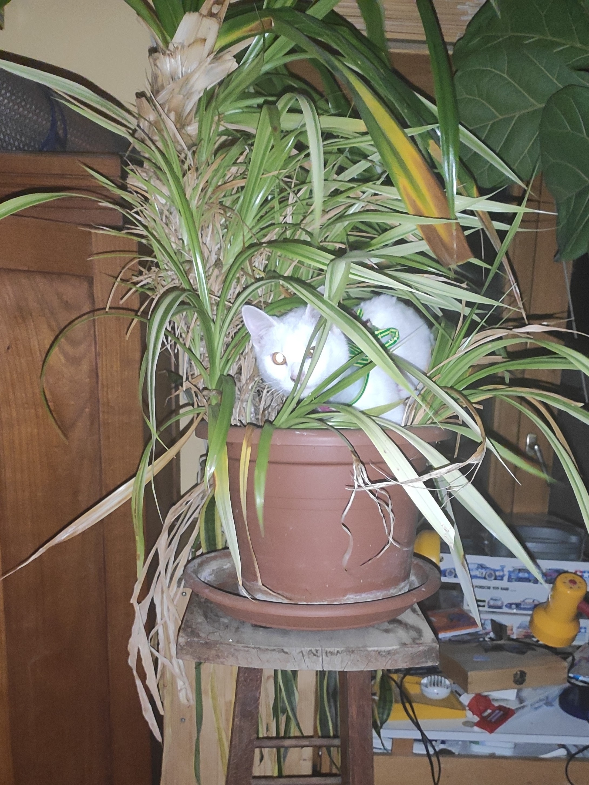

Amióta az eszemet tudom, macskákkal élek együtt. Gondoltam, csatolok róluk pár képet, ne csak én gyönyörködjek a cukiságukban:
Röfit pár napja hoztuk haza, 6-7 hetes kislány. Alig töltöttünk egymással pár napot, elmondhatom, hogy egy hihetetlenül aranyos macskakporonty.
Gréta most lesz egy éves, de ez nem látszik rajta. Rengeteg egészségügyi problémája ellenére eszméletlenül energikus, illetve egészen kivételesen kajla. Erős tipp, hogy amorf macskáknak gondol minket.



